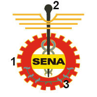
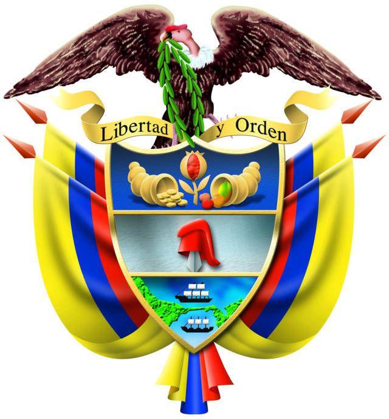
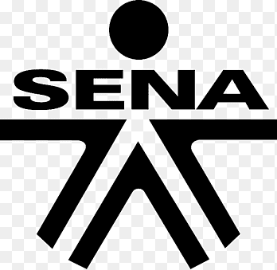

se localiza en el occidente de colombia y cuenta con una area de 83.170Km2. Esta region se caracteriza por su alta humedad, con extensas zonas de manglares y pantanos.
La presipitacion pluvial es de las mal altas del mundo. Predomina la poblacion afrocolombiana, pero alberga importantes asentamientos indigenas. Buenaventura es el principal puerto maritimo del pais y concentra una fuerte actividad economica y de servicios.
La economia de la region se basa en pesca industrial, la extraccion forestal para los mercados nacionales e internacionales, la mineria industrial de oro y platino, la ganaderia y la agricultura. la zona pacifica esta compuesta por choco, valle del cauca,Nariño y cauca.
 |
El escudo del SENA y la bandera, diseñados a comienzos de la creacion de nuestra institucion, refleja los tre sectores economicos dentro de los cuales se ubica el accionar de la institucion: el piñon, representativo del sector industrial; el cauduceo, asociado al de comercio y servicios; y el cafe ligado al primario y extractivo. |  |
 |
El logo simbolo muestra de forma grafica la sintesis de los enfoques que impartimoes en la que el individuo es el responsable de su propio proceso de aprendizaje. |
| EL SENA esta encargado de cumplir la funcion que le corresponde al Estado de invertir en el desarollo social y tecnico de los trabajadores colombianos. ofreciendo y ejecutando la formacion profecional integral, para la incorporacion y el desarollo de las personas en actividades productivas que contribuyan al desarollo social, economico y tecnologico del pais (Ley 119/1994). | En el año 2022 el SENA se consolidara como una entidad referente de formacion integral para el trabajo, por su aporte a la empleabilidad, el emprendimiento y la equidad, que atiende con pertinencia y calidad las necesidades productivas y sociales del pais. |